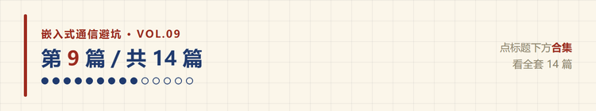
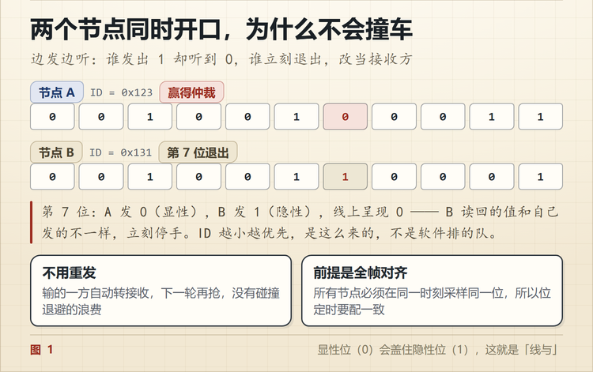

CAN 几十个节点同时发，为什么不会撞车
🐵 程序小猴 · 嵌入式通信避坑 Vol.09
边发边听，谁先听到不一样的，谁就退。

CAN 总线最反常识的一点，是它允许冲突。
以太网怕冲突，一旦撞上，两边都退，随机等一段时间重发。CAN 不怕，撞上了照样能把优先级高的那帧完整发出去，一个位都不丢。
这套机制叫逐位仲裁，是 CAN 协议里最精巧的部分。
一、物理层先给了一个前提
CAN 用两根差分线，CAN_H 和 CAN_L。
收发器驱动总线的时候，只能干两件事，拉成显性，或者放手让它保持隐性。
- 显性，逻辑 0
- 隐性，逻辑 1
关键是线与。总线上只要有一个节点输出显性，整条总线就是显性。
所以「一个发 0 一个发 1」的结果是 0，不是冲突，不是错误，是确定的 0。
这一步是整个仲裁机制的地基。
二、边发边听
CAN 控制器发每一位的时候，同时在读总线。
这是它和串口最大的不同。UART 发出去就不管了，CAN 发出去要回头看一眼。
发送方心里有个预期，「我发的是 0」或者「我发的是 1」。读回来发现不是自己发的那个值，就知道有人跟自己抢，而且对方的优先级更高。
于是它立刻停手，退出仲裁，转成接收状态。
三、一次真实的仲裁
假设两个节点同时要发，节点 A 的 ID 是 0x123，节点 B 的 ID 是 0x131。
二进制展开。
| ID | 二进制 | |
|---|---|---|
| 节点 A | 0x123 | 001 0010 0011 |
| 节点 B | 0x131 | 001 0011 0001 |
从最高位往下逐位比。
前 6 位完全一样，都是 001001。
第 7 位，A 发 0，B 发 1。总线上呈现 0，因为线与。
A 读回来是 0，跟自己发的一致，继续发。
B 读回来是 0，自己发的却是 1，立刻停手。
B 退出，A 继续把整帧发完。整个过程没有任何一位被破坏。
ID 就是 0x123 小于 0x131，所以 A 赢。 这不是巧合，是二的幂次决定的。

四、输的那个节点会怎样
它不会丢掉数据。
仲裁输掉之后，硬件自动切换成接收模式，把赢家发的那一帧完整收下来。
等总线空闲了，它再重新申请发送。如果这次又有人抢，再比一次。
所以丢的不是帧，只是这一轮的发送机会。上层应用根本感知不到，除非总线上一直是高优先级的帧在跑。
五、为什么不会像以太网那样重发
以太网撞车的时候，两边的数据都已经发出去了，撞坏了，只能都退回去重发。带宽就这么浪费掉了。
CAN 的仲裁发生在帧的最前面几位，还没到数据场。输的一方退得早，赢的一方完全不知道自己曾经被打断过。
所以 CAN 的仲裁不损失带宽。这也是它在实时系统里受欢迎的原因。
六、仲裁只在总线空闲时发生
这一点很多人误解。
正在传输的帧，不会被后来者打断。
哪怕后来者的 ID 更小、优先级更高，它也得等这一帧发完（或者等到帧间隔），才有机会参与下一轮竞争。
所以 CAN 的延迟是可以算出来的，最坏情况是「最长的那一帧传完」。这是实时系统能接受它的前提。
七、ID 分配就是优先级设计
既然数值小的 ID 优先，那 ID 怎么分配就变成了一个设计问题。
常见的做法是按紧急程度分层。
| ID 段 | 用途 | 例子 |
|---|---|---|
| 0x000 ~ 0x0FF | 安全相关，最高优先 | 刹车、转向、急停 |
| 0x100 ~ 0x2FF | 实时控制 | 电机转速、扭矩指令 |
| 0x300 ~ 0x5FF | 状态反馈 | 温度、电压、故障码 |
| 0x600 ~ 0x7FF | 诊断和非实时 | 参数读写、固件升级 |
这只是个模板，实际按项目定。但要记住一点，ID 不是随便编的，它决定了这条消息能多快抢到总线。
八、标准帧和扩展帧混在一起
前面的例子里，两个节点都是标准帧，11 位 ID 直接比。
如果标准帧和扩展帧混在一条总线上呢？
这两种帧的仲裁场长度不一样，比到后面会撞上不同含义的位。
标准帧的顺序是，11 位 ID，然后是 RTR（数据帧显性，远程帧隐性）。
扩展帧的顺序是，11 位基本 ID，然后是 SRR，这个位固定是隐性。
所以前 11 位相同时，第 12 位就分出胜负了。标准数据帧的 RTR 是显性，扩展帧的 SRR 是隐性，标准帧赢。
如果两边都是远程帧呢？第 12 位都是隐性，继续比。第 13 位，标准帧是 IDE（显性），扩展帧也是 IDE（隐性），还是标准帧赢。
结论是两个都是标准帧赢。 所以「ID 越小越优先」这句话，跨帧类型时不成立，得看这一层。
实际项目里通常让标准帧跑实时控制量，扩展帧跑诊断和长报文，也是这个道理。
九、三个常见误解
误解一，CAN 是先到先得。
不是。谁先发起不重要，重要的是谁的 ID 小。先发但 ID 大的，照样会被顶下去。
误解二，ID 是设备地址。
不是。CAN 的 ID 描述的是消息内容，不是接收方。一条转速报文可以被仪表、变速箱、ABS 同时收下。
误解三，仲裁会丢数据。
不会。输的一方自动转为接收，赢的一方数据完整。丢的只是发送机会。
十、按这个顺序看一次仲裁

| 顺序 | 看什么 | 说明 |
|---|---|---|
| ① | 是不是同时发起 | 只有同一时刻开始的两帧才仲裁 |
| ② | 比到第几位分出胜负 | 第一个不同的位就是决胜位 |
| ③ | 输的一方有没有退 | 波形上该节点应该停止驱动 |
| ④ | 赢的一帧是否完整 | 数据场不该有任何缺失 |
| ⑤ | 输的一方下一轮有没有重试 | 正常应该自动重发 |
| ⑥ | 标准帧和扩展帧有没有混 | 混用会让优先级规则变复杂 |
第 ② 步最直观。用分析仪看两个 ID 的二进制，找出第一个不同的位，那就是分胜负的地方，和波形上电平变化的位置能对上。

CAN 的仲裁之所以漂亮，是因为它把「冲突」变成了「排序」。
不是避免碰撞，是让碰撞本身产生正确的结果。
你项目里的 CAN ID 是按什么规则分的？评论区说说。
📌 这是「嵌入式通信避坑」第 9 篇，全系列 14 篇，从串口一路讲到 CAN 和无线选型。
💬 觉得有用就点个在看，下一篇讲 CAN 收不到数据的时候，先看 TEC 和 REC 这两个错误计数器。